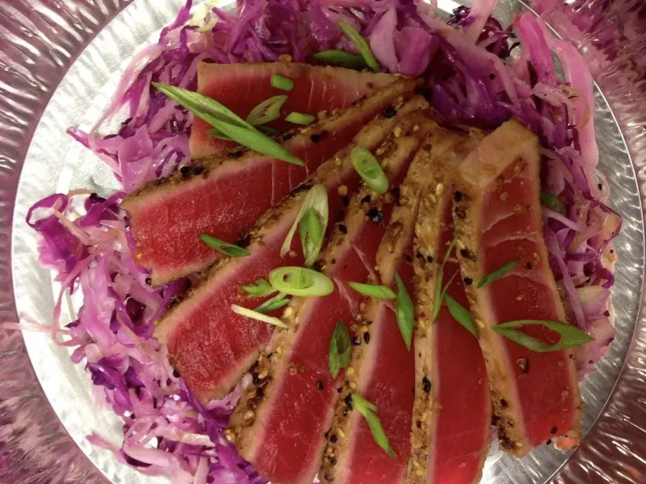
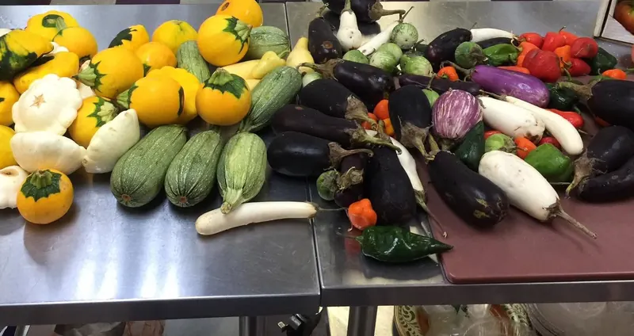

6 Paleo lunches
Two each of three dishes, for one
Just One More Bite's Paleo plan is 6 chef-made lunches and/or 6 dinners a week, built on meat, vegetables, fruit, nuts and seeds, with no grains, no dairy and no added sugar. Lunches are $14.50 and dinners $19.50. Chef Michael Saunders writes a new Paleo menu every Wednesday evening; order by Saturday at 8 PM and it's delivered Tuesday in Raleigh, Cary, Morrisville, Research Triangle Park (RTP) and Knightdale.



Paleo takes its cue from the Paleolithic era: foods people could hunt, fish or gather. Chef Mike keeps the rules simple and makes them taste like a restaurant.
Grain-free, dairy-free cooking takes time: more shopping, more chopping, more pans. The Paleo plan hands that job to a steakhouse-trained chef.
Six days of each, for one person. Prices are before NC sales tax, and there's no contract.
Two each of three dishes, for one
Two each of three dishes, for one
| Paleo | Low-Carb Dairy-Free | Zone | |
|---|---|---|---|
| The idea | No grains, no dairy, no added sugar | Lighter, cleaner eating with no dairy | Balanced 40/30/30, 4 blocks a meal |
| Meals | Lunches and dinners | Lunches and dinners | Breakfasts, lunches and dinners |
| Lunch | $14.50 | $12.50 | $13.50 |
| Dinner | $19.50 | $18.00 | $18.00 |
| Macro targets | Not published | Not published | 28–32 g protein per meal |
| Good fit for | Grain-free, dairy-free eaters | A 3–4 week clean-eating run | Athletes, fat loss and lean muscle |
Prices per meal, before tax. See every price · Low-Carb Dairy-Free · Zone
Meals built on meat, vegetables, fruit, nuts and seeds, with no grains, no dairy and no added sugar.
6 Paleo lunches are $87 ($14.50 each) and 6 Paleo dinners are $117 ($19.50 each), before tax. Order lunches, dinners or both.
No. Every menu is new each week, so we publish macro targets only for the Zone menu (about 28–32 g protein per meal). If you want counted macros, look at Zone meal delivery.
Paleo meals are planned without grains or dairy, but they're cooked in a kitchen that also handles gluten and dairy. If you have a severe allergy, email jomborders@gmail.com before you order.
Both are dairy-free lunches and dinners. Paleo also leaves out grains and added sugar and is built on meat, vegetables, fruit, nuts and seeds. Low-Carb Dairy-Free is for lighter, lower-carb eating, with lunches at $12.50. Compare them on this week's menus.
By Saturday at 8 PM for delivery the following Tuesday, 10 AM – 5 PM. The new Paleo menu posts every Wednesday evening.

Breakfast, lunch and dinner for 6 days, built to 4-block macros for fat loss and lean muscle.

Six days of lunches and dinners for cleaner, lighter eating that still tastes like a restaurant.

Real dinners the whole table will eat. Each one feeds three adults, or two adults and two kids.
New menu every Wednesday evening. Order by Saturday at 8 PM, and Chef Mike delivers Tuesday.
Questions? Call (919) 443-5408 or email jomborders@gmail.com.